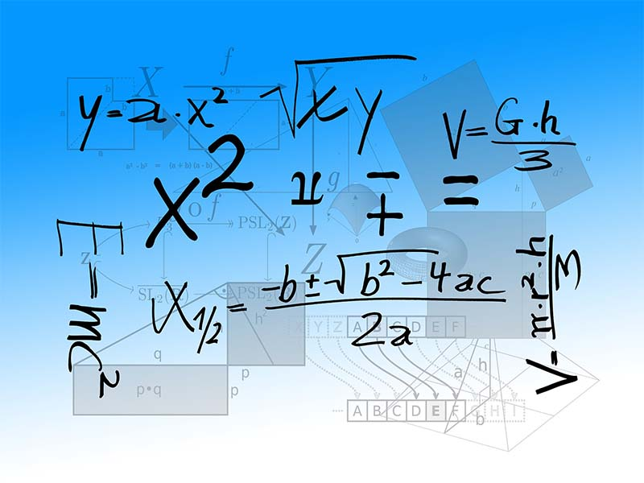

El método científico es un conjunto de pasos ordenado, que se emplea principalmente en el hallazgo de nuevos conocimientos en las ciencias. Para ser llamado científico, un método de investigación debe basarse en lo empírico y en la medición, sujeto a los principios específicos de las pruebas de razonamiento.1 Según el Oxford English Dictionary, el método científico es: «un método o procedimiento que ha caracterizado a la ciencia natural desde el siglo XVII, que consiste en la observación sistemática, medición, experimentación, la formulación, análisis y modificación de las hipótesis».Oxford English Dictionary — entrada para scientific.
El método científico está sustentado por dos pilares fundamentales: la reproducibilidad y la refutabilidad. El primero, la reproducibilidad, implica la capacidad de repetir un determinado experimento, en cualquier lugar y por cualquier persona. Este pilar se basa, esencialmente, en la comunicación y publicidad de los resultados obtenidos (por ejemplo, en forma de artículo científico), y su verificación por la comunidad científica. El segundo pilar, la refutabilidad, implica que toda proposición científica debe ser susceptible de ser falsada o refutada (falsacionismo), siendo la falsabilidad el modus tollendo tollens del método hipotético-deductivo experimental. En otras palabras, el método científico rechaza las verdades absolutas[cita requerida], ya que establece que se podrían diseñar experimentos sobre subconjuntos específicos de parámetros que arrojen resultados distintos a los predichos originalmente, negando la hipótesis original para estos parámetros. Por lo tanto, las proposiciones científicas nunca pueden considerarse absolutamente verdaderas, sino a lo sumo «no refutadas».
Según James B. Conant, no existe un método científico. El científico usa métodos definitorios, métodos clasificatorios, métodos estadísticos, métodos hipotético-deductivos, procedimientos de medición, entre otros. Y según esto, referirse a el método científico es referirse a este conjunto de tácticas empleadas para constituir el conocimiento, sujetas al devenir histórico, y que eventualmente podrían ser otras en el futuro.Gregorio Klimovsky, Las desventuras del conocimiento científico Ello nos conduce a tratar de sistematizar las distintas ramas dentro del campo del método científico.
{kind=link}